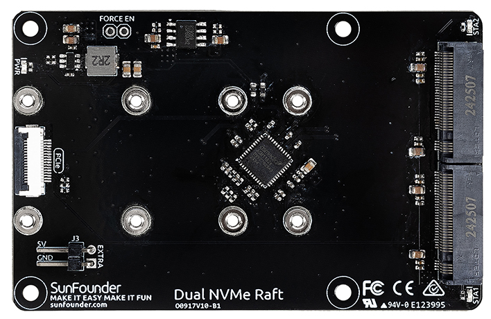
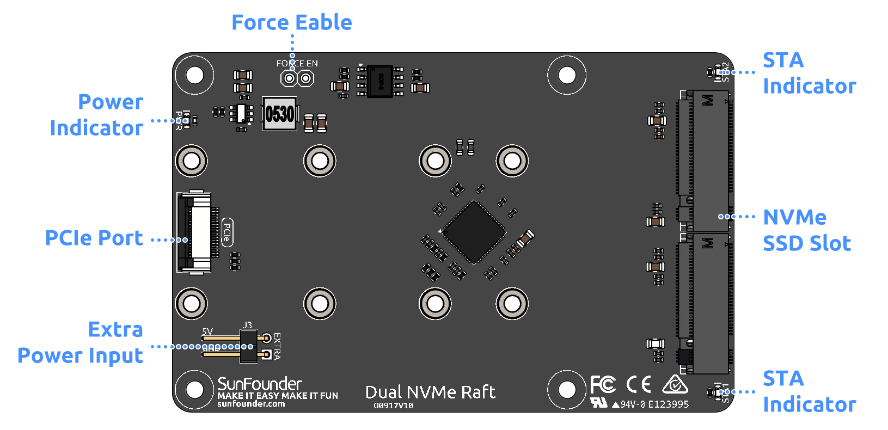

Note
您好，欢迎加入 SunFounder 的 Raspberry Pi、Arduino 和 ESP32 爱好者 Facebook 社区！与志同道合的朋友一起深入探索 Raspberry Pi、Arduino 和 ESP32 的无限可能。
为什么加入？
专家支持：在社区和官方团队的帮助下解决售后问题和技术难题。
学习与分享：交流技巧和教程，提升技能。
独家预览：抢先了解新产品发布和独家预览内容。
专属折扣：享受我们最新产品的专属优惠。
节日促销与抽奖：参与节日特别活动和抽奖。
👉 准备好一起探索与创造了吗？点击 [here] 立即加入！
双 NVMe 扩展板（Dual NVMe Raft）
Dual NVMe Raft 双 NVMe 扩展板 允许您通过 Raspberry Pi 5 的 PCIe 接口连接两个 M.2 外设（如 NVMe 固态硬盘或其他 PCIe 配件）。
该扩展套件集成了 PCIe Gen 2 交换芯片，配备两个 M-Key M.2 PCIe 插槽，支持 2230、2242、2260 和 2280 尺寸，可安装两个 NVMe Gen2 固态硬盘或 AI 加速卡。 用户可将两个 NVMe SSD 配置为软件 RAID 0 或 RAID 1，以构建 NAS 方案；也可组合使用一个 AI 加速器和一个 NVMe SSD，以增强 AI 性能；或安装两个 AI 加速器，构建更强大的 AI 运算平台。
Note
建议在搭配 Dual NVMe Raft 或通用 NVMe PIP 使用时，为 Raspberry Pi 5 配备官方 27W 电源适配器，以保证充足稳定的供电。使用非官方、功率不足或不合规范的电源可能会导致 SSD 无法正常工作。
Warning
请勿热插拔 NVMe SSD，否则可能会损坏您的设备。
产品特性
双通道 PCIe 2.0 接口，最高传输速率可达 500 MB/s
支持使用 M-Key 接口的 M.2 NVMe SSD，兼容 2230、2242、2260 和 2280 尺寸
板载 3.3V 电源输出，最大电流支持 3A
由于 Raspberry Pi 的 PCIe 接口仅提供 1A（5W），当 SSD 需求更高功率时，推荐使用外部 5V 电源供电（最多支持 10W）
板载 2-pin 2.54mm 接口与电缆，可接入额外 5V 外部电源
支持安装于 Raspberry Pi 背面，不干扰主动散热系统或其他兼容扩展板
使用 FPC（柔性电路）排线连接至 Raspberry Pi，实现 PCIe 信号传输
三个状态指示灯：STA1 与 STA2 指示各 PCIe 通道的活动状态，PWR 显示供电状态
硬件总览
PCIe 接口：通过 FPC 排线连接 Raspberry Pi，用于 PCIe 信号传输。
额外电源输入：当 NVMe SSD 所需功率较大时，可连接外部 5V 电源以增强供电能力。
电源指示灯(PWR)：显示扩展板是否正常通电，如无亮灯请检查排线连接或外部电源。
强制供电跳线（Force Enable）：强制开启 3.3V 电源输出，即使未收到 PCIe 电源开启信号时也能供电。系统供电信号失效时建议使用。
NVMe SSD 插槽：支持 M-Key 接口的 M.2 NVMe 固态硬盘，兼容 2230、2242、2260 和 2280 尺寸。
状态指示灯(STA)：指示每个 SSD 插槽的数据传输或设备活动状态，读写过程中会闪烁。
安装说明